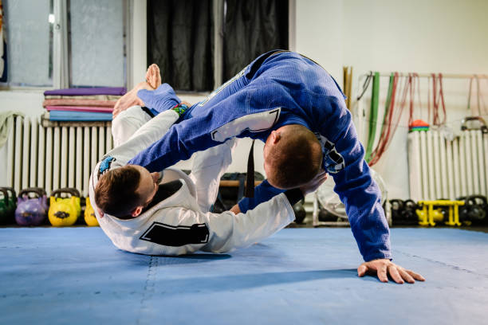

My main hobby at the moment is Brazilian Jiu Jitsu. I got into it over the summer of 2023 and got the chance to start training more in the Fall. I love the competitive and strategic nature of the sport and firmly believe it has helped me in all aspects of my life.
I am originally from Vancouver, Canada, and my heritage and upbrining are largely responsible for the person I am today.
My goals as a software developer are numerous and varied, as I hope to have the opportunity to work on a lot of ambitious projects. I plan on releasing at least one free open-source application and maintaining it on GitHub for at least a couple years thereafter before passing it off to a community of users. I want to work on the technology of tomorrow and enable functionality in software that is novel and game-changing. I want to do everything I can to do everything I can.
My experience in the field of software dev includes multiple projects, an internship at Lawrence Berkeley National Lab, and pursuit of knowledge at NMSU and through programs like those offered by AI4ALL. More details are on my LinkedIn, which can be reached by clicking any of the icons below.